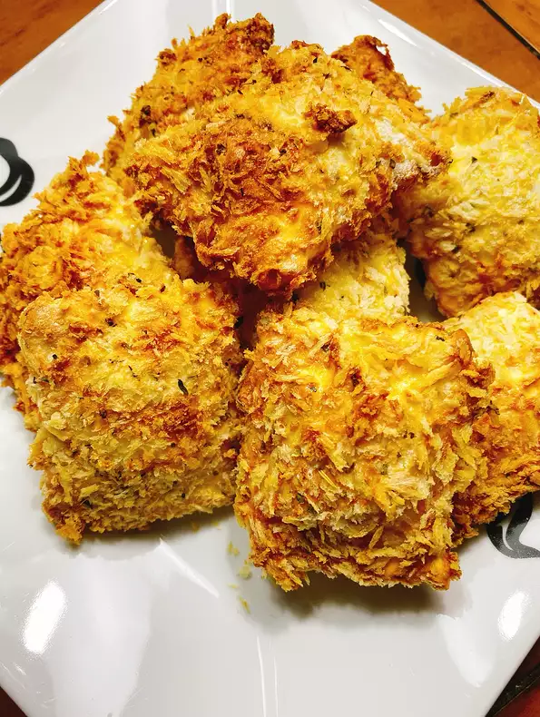

Crunchy Air-Fried Ravioli

Really easy recipe to make the best Crunchy Air-Fried Ravioli
for all your family in your home, less than two hours and you are
not going to believe how good it tastes.
Friendly reminder that you should be carfeul when in the kitchen.
We don't want injuries.
Ingredients
- 3 large eggs
- 1 teaspoon salt
- 1 cup panko bread crumbs
- 1 serving cooking spray
- ½ cup all-purpose flour
- ½ teaspoon ground black pepper
- ½ teaspoon Italian seasoning
- ¼ teaspoon garlic salt
- 1 ½ pounds frozen cheese ravioli, thawed
Step 1
Preheat an air fryer to 370 degrees F (188 degrees C) for 5 minutes.Step 2
Eggs in a shallow bowl until lemon-colored and frothy. Combine flour, salt, and pepper in a separate dish. Mix panko, Italian seasoning, and garlic salt together in a third bowl.Step 3
Thawed ravioli in eggs and dredge in flour. Dip ravioli back into eggs and finally turn in panko mixture. Shake off excess breading. Place coated ravioli into the air fryer basket. Lightly spray ravioli with nonstick spray.Step 4
Cook in the preheated air fryer for 8 minutes. Turn ravioli and increase temperature to 400 degrees F (200 degrees C). Fry for an additional 2 minutes.